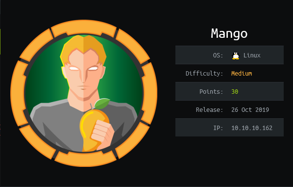

HTB - Mango Write-Up
Table of Contents
Published on 23.04.2020
Summary
Mango is a Hack The Box machine and has the IP address 10.10.10.162. It was released on the 26. October 2019, uses a Linux OS and is categorized as a medium machine.
This box features some really nice learning opportunities, especially during the Foothold step. Actually, getting the foothold is the hardest part of this machine and the rest is quite easy. However, I really enjoyed the techniques that were necessary to solve this challenge and it's one of my favourite Hack The Box machines I've done so far.
Enumeration
The first thing to do is to enumerate and gather information about the box. One of the most important tools is the port scanner nmap. I like to run it with the parameters -T4 -A -p- to get a thorough scan:
There are three ports open on Mango:
| Port 22 - ssh: | ssh is rarely a direct way to attack HTB boxes, so I ignore that for now. |
| Port 80 – Apache httpd 2.4.29: | An Apache webserver that seems to be running a website with the title Mango | Sweet & Juicy. |
| Port 443 - Apache httpd 2.4.29 | Another Apache webserver, but this time over SSL and with the title Mango | Search Base. |
The SSL certificate reveals the vhost staging-order.mango.htb, so I add 10.10.10.162 mango.htb and 10.10.10.162 staging-order.mango.htb to the /etc/hosts file of my Kali VM.
Port 443 – Apache httpd 2.4.29 webserver:
Let's check out the website served on port 443 in the browser by surfing to https://mango.htb:The page we find here is reminiscent of Google's search engine. However, it has no functionality and pressing the buttons does nothing. In the top right, there are links to several other sections and the Analytics link actually leads to a seemingly interesting page. However, it is not necessary to exploit these pages to finish this box, so it seems like they are just a rabbit hole.
Port 80 - Apache httpd 2.4.29 webserver:
Next, let's check out the non-SSL website hosted on the box. Surfing to http://mango.htb results in a Forbidden response code, but http://staging-order.mango.htb reveals the following login page:
Trying out common credentials like username admin with password admin (and similar pairs) doesn't let us login. However, the page is vulnerable to an injection attack, which I'll describe in the Foothold section.
Additional enumeration steps
Of course, I also used other tools and techniques during the enumeration phase, like enumerating the files and directories on the server with dirbuster, checking the source code of the pages and so on. I'm leaving these steps out of this write-up, since they did not reveal anything interesting.
Foothold
To get onto the box, we have to exploit the login page presented at http://staging-order.mango.htb. First, let's start Burpsuite and see how the login attempts are handled by the site. This reveals that the username and password are transfered as simple POST parameters.
A good idea here is to test if an injection attack is possible. I first try out some common SQL injection attacks, but they don't lead me anywhere. I then remember that the name of boxes at Hack The Box usually also allude to a technique or tool that is helpful to solve the challenge. The word Mango is quite close to MongoDB or Django.
I hazard the guess that the server might be using a MongoDB database from this (which turns out to be the case). MongoDB is a NoSQL database, so of course SQL injection attacks don't work. However, there are also NoSQL injection attacks and this Github page has a nice overview and collection of things to try.
The simple bypass authentication trick mentioned there doesn't work, but the Extract data information section contains the right hints.
Using regular expressions, it's possible to extract information from the database. By setting the username parameter to username[$regex], I can use a regular expression to gather information about the usernames. I set the password parameter to password[$ne]=1, where [$ne] stands for not equal, hoping/assuming that no user simply has the password "1" (note that in a real-life attack you could deduce assumptions/rules like this from the password policy of the site). By using the regular expression ^a.*, for example, I can check whether there is a user whose username starts with "a" - sending this request with Burpsuite, I get a 302 response code from the server:
However, if I'm checking for a username starting with "z" using the regular expression ^z.*, I get a 200 response code from the server, just like when trying out an incorrect username-password combination:
This way, it is possible to successively compute usernames registered in the database. For example, after getting the 302 response with ^a.*, I can check whether there's a user whose name starts with "ab" with the regular expression ^ab.*. When I get a 302 code again, I know that there must be such a user. If the server returns a 202 response, I know that there is no username that starts with "ab" and so on. This gives me list of candidate usernames to check out.
For each of these candidates, I can check whether there's actually such a username by using username=candidate&password[$ne]=1, where candidate is a username that I want to test. If I get a 302 response here, I know there must be a user with exactly this username. If I get a 200 reponse code, then there's no such user.
The same technique can be used to find the passwords of the users. Once I have a username (let's say admin is a valid name), it's possible to brute-force the password of the user character for character by setting username=admin and password[$regex]=^a.* iterating over all characters, checking the response codes in the same way as above. As long as I get at least one 302 response code, I know that I found a new character of the password. If I only get 200 responses for all characters, I know that I must have already found the complete password.
Of course, this is something you don't want to do by hand. I therefore wrote a little Python script to do this work for me. You can find my script here, but I suggest you try to write one yourself, since I think this is a great learning opportunity and it was a lot of fun to write this script :)
My script returns this output and I now have two usernames and passwords:
| Username | Password |
|---|---|
| mango | h3mXK8RhU~f{]f5H |
| admin | t9KcS3>!0B#2 |
Trying to log in to the page with these usernames and passwords succeeds, but we're only greeted by a "Under Plantation" message:
Since this doesn't really lead anywhere, I try to login with the username-password combinations over ssh, which succeeds for the user mango:
Exploitation - User
Unfortunately, there's no user.txt in the home directory of mango, so it seems like we need to do some lateral movement to another user:
Checking out the /home directory reveals that there is not only a user called admin registered in the database, but also on the machine itself:
I try to simply change to the user admin by using the su command and the password I found earlier... and it works! After the surprisingly complex foothold step, this was quite easy :)
Exploitation - Root
To root the box, I first use my new privileges as the user admin and enumerate the box. While looking for SUID files with the command find / -perm -u=s -type f 2>/dev/null, I see that admin can execute jjs with root permissions.
jjs is a command-line tool that comes bundled with some releases of the Java Development Kit and allows for the execution of JavaScript code. GTFOBins has a page on jjs with some suggestions on what could work to escalate our privileges.
Unfortunately, simply spawning a shell doesn't work for me. However, I can use the suggested code for writing files to add my own ssh key to root:
I then simply connect to the box as root through ssh and I'm done!